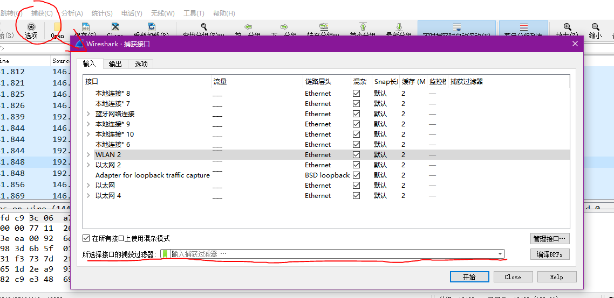
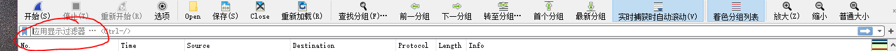
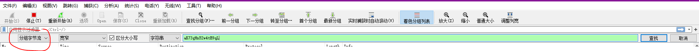

抓包过滤器

wireshark抓包过滤器语法如下。
Wireshark捕获过滤器的语法格式为
。各部分说明如下:
Protocol(协议) : 该选项用来指定协议,如ether、fddi、ip、arp、rarp、decnet、lat、sca、moprc、mopdl、tcp、udp等。
Direction(方向): 该选项用来指定来源或目的地,可使用的值有src、dst、src and dst以及src or dst。
Host(s): 指定主机地址,可用的关键字包括net(网段)、port、host、portrange等。
Other expression(其他表达式): 使用其他表达式捕获过滤器。
下面存一些用到的例子:
(1) tcp dst port 9999 || tcp src port 9999
注意,抓包过滤器会直接丢弃不符合语法的数据包,丢弃了后面就看不到了
显示过滤器

对已经捕获到的数据包进行二次过滤,语法太多了,写几个常用的。
ip.addr == xxx.xxx.xxx.xxx
ip.dst ==
ip.src ==
tcp.port ==
udp.port ==
tcp.dstport ==
tcp.srcport ==
在wireshark主界面上Ctrl + F,然后如下图操作。
